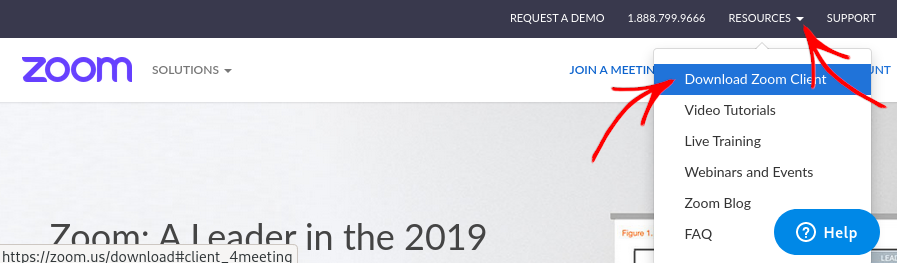
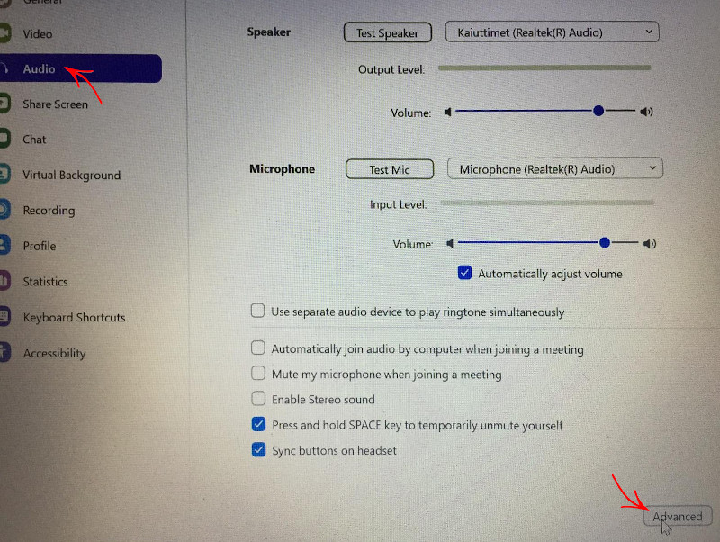

Zoom-etäpuhelun käynnistäminen paremmalla äänenlaadulla
Tämä artikkeli on työn alla. Jos pystyt auttamaan, ks. ohjeet täällä
Ks. myös oppilaan ohjeet.
Zoom-palveluun rekisteröityminen
Sinun tulee ensin rekisteröityä Zoom-palveluun osoitteessa zoom.us.
Paremman äänenlaadun salliminen
Kun olet kirjautunut zoom.us-sivulle, voit sallia paremman äänenlaadun käyttämisen:
Valitse Settings sivun vasemmasta laidasta.
Siirry alaotsikon kohdalle.
Osion 12. kohta on Allow users to select original sound in their client settings. Aktivoi se, eli napsauta oikealla olevaa kytkintä niin että se muuttuu siniseksi.
Lataa Zoom-sovellus.
Käynnistä Zoom-sovellus.
Avaa Zoom-sovelluksen asetukset.

Napsauta üéß Audio ja sitten Advanced
Rastita ✓ Show in-meeting option to "Enable Original Sound" from microphone
Vaihda kohdissa Suppress persistent background noise ja Suppress intermittent background noise valinta vaihtoehdosta Auto ⌄ vaihtoehtoon Disable.
Riittää, kun rekisteröityminen ja paremman äänenlaadun salliminen tehdään yhden kerran.
Paremman äänenlaadun kytkeminen päälle
Kun olet käynnistänyt videopuhelun, seuraa itse oppilaan ohjeen kohtia 8–11 paremman äänenlaadun kytkemiseksi päälle puhelussa.
Pyydä oppilasta liittymään puheluun seuraten tarkasti oppilaan ohjetta.
(artikkeli on vielä kesken – apu on tervetullutta)